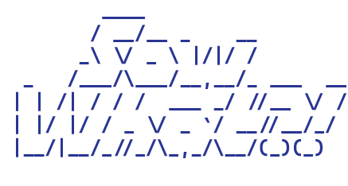
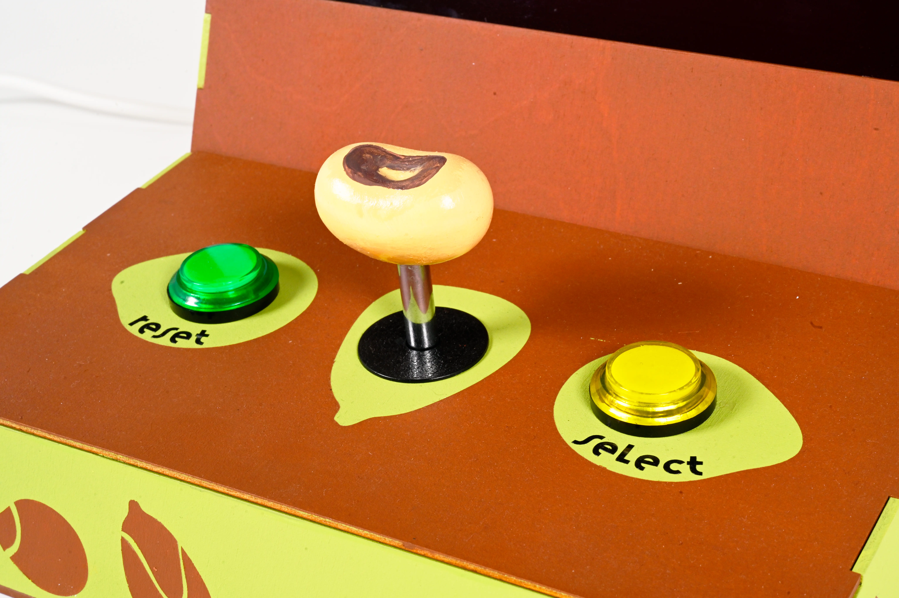
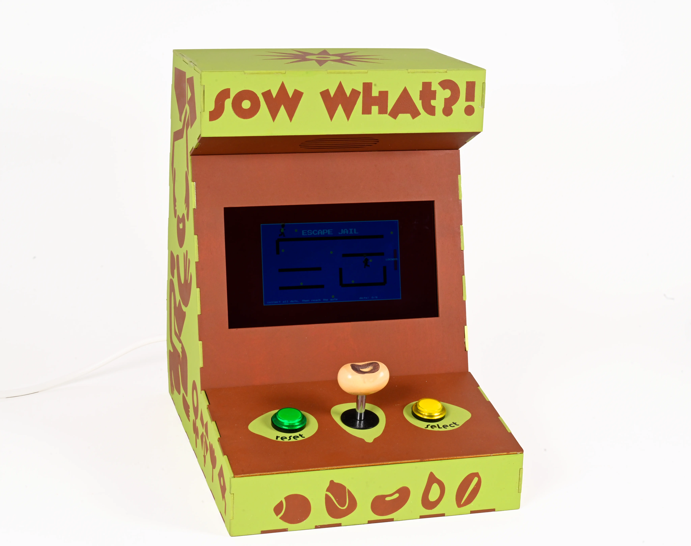
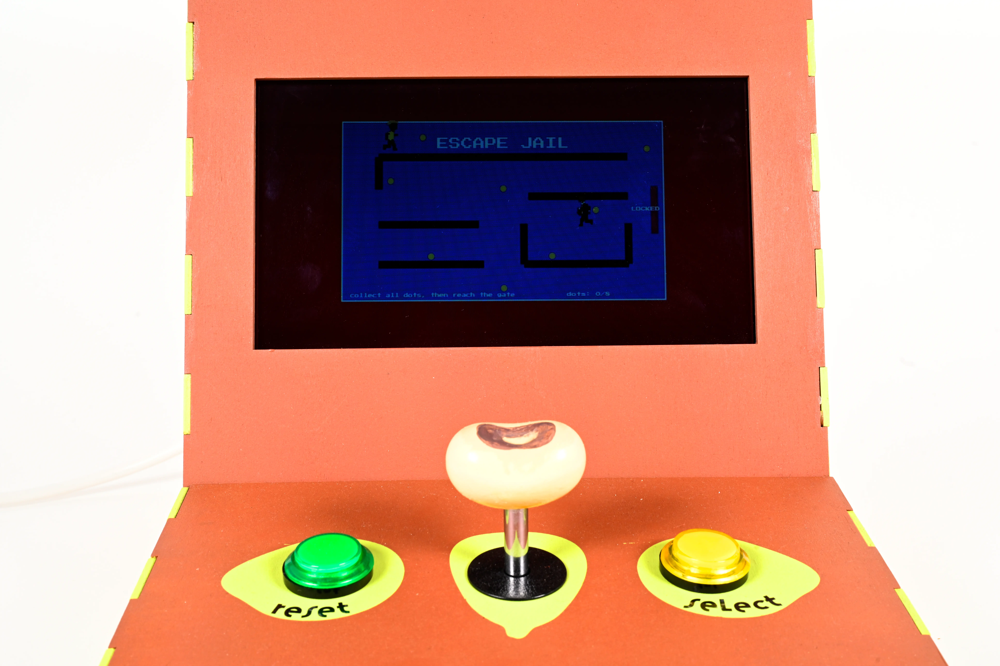

____ _ ____ __ ___ __
/ __/__ _ __ | | /| / / / ___ _/ //__ \/ /
_\ \/ _ \ |/|/ / | |/ |/ / _ \/ _ `/ __//__/_/
/___/\___/__,__/ |__/|__/_//_/\_,_/\__/(_)(_)

Sow What?! is an arcade game and machine exploring seed sovereignty and the pressures faced by small-scale and rural farmers under privatisation and certification laws. Player choices shape the outcome, revealing interconnected consequences for self, community, and environment, and highlighting the complexities of access within contemporary agricultural systems.


